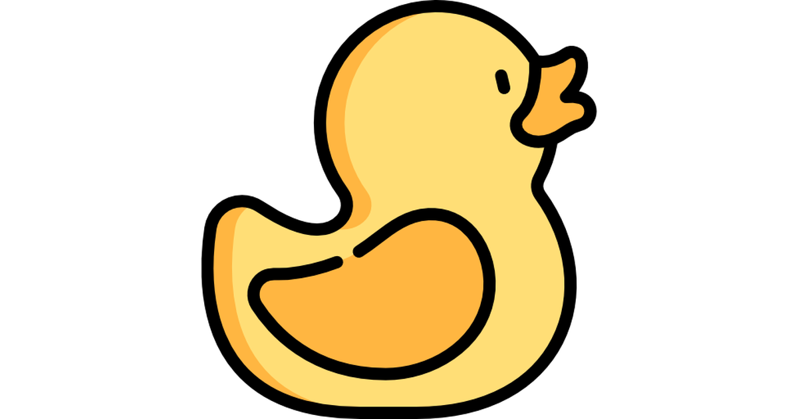
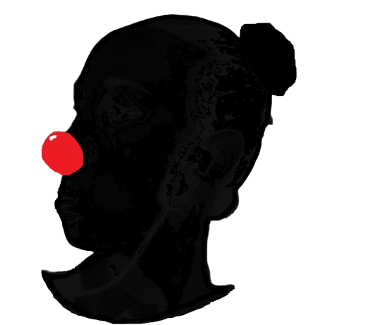

CRISTINA GRAOS


Soy Cristina Graos, y a lo largo de mi trayectoria he tenido el privilegio de formarme en diversas disciplinas artísticas que han enriquecido mi labor como docente. Mi formación comenzó en el ámbito del teatro, donde aprendí no solo las técnicas de actuación, sino también la importancia de la expresión y la conexión emocional con el público. Con el tiempo, me adentré en el mundo del clown, descubriendo cómo el humor y la comedia pueden ser herramientas poderosas para la comunicación y la enseñanza. Complementé esta formación con estudios en expresión corporal y movimiento, lo que me permitió explorar cómo el cuerpo puede transmitir emociones y narrar historias sin necesidad de palabras.
Además, he profundizado en el arte del mimo, una disciplina que exige creatividad y precisión, y que me ha ayudado a desarrollar una mayor sensibilidad hacia el lenguaje no verbal. A través de mis cursos intensivos, busco compartir estas experiencias y conocimientos, creando un espacio donde cada persona pueda descubrir y potenciar su propia voz y creatividad. Estoy comprometida con la enseñanza y la transmisión de estas artes, y espero poder inspirar a otros a explorar su propio potencial creativo.